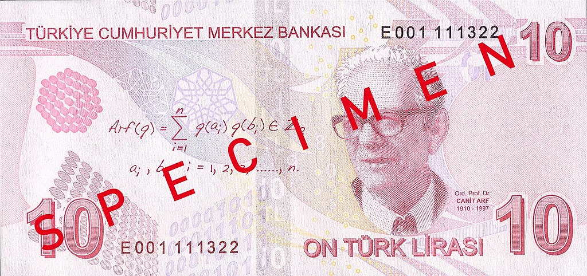

Prof. Dr. Cahit Arf
Biography:
- Cahit Arf was born on 11 October 1910
- His family migrated to Istanbul with the outbreak of the Balkan War in 1912.
- The family finally settled in İzmir where Cahit Arf received his primary education.
- He continued his education in Paris and graduated from École Normale Supérieure.
- In 1933 he joined the Mathematics Department of Istanbul University.
- In 1937 he went to Göttingen, where he received his PhD from the University of Göttingen.
- He returned to Istanbul University and worked there until his involvement with the foundation work of Scientific and Technological Research Council (TÜBİTAK) upon President Cemal Gursel's appointment in 1962.
- After serving as the founding director of the council in 1963, he joined the Mathematics Department of Robert College in Istanbul.
- Arf spent the period of 1964–1966 working at the Institute for Advanced Study in Princeton, New Jersey.
- He was the president of the Turkish Mathematical Society from 1985 until 1989. Arf died on December 26, 1997 in Bebek, Istanbul, at the age of 87.

The man whose portrait is depicted on the reverse of the Turkish 10
lira banknote